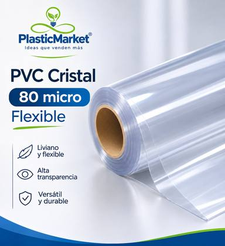
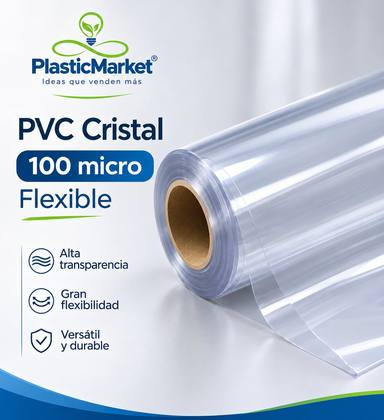
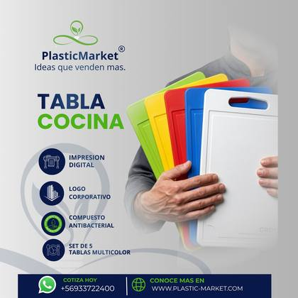
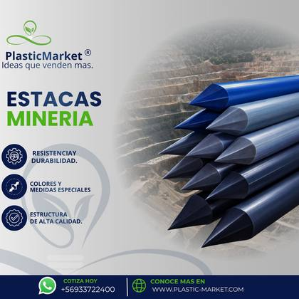

Láminas de PVC rígido con alta transparencia y resistencia al impacto, fabricadas en distintos espesores según el uso: desde protecciones livianas hasta paneles de mayor resistencia para ambientes industriales y comerciales.
Láminas de PVC rígido con alta transparencia óptica, ideales para protecciones, ventanas industriales, mamparas de separación, empaques rígidos y aplicaciones donde se requiere visibilidad total junto con resistencia al impacto y a la manipulación diaria. Se fabrican en distintos espesores según el uso: desde protecciones livianas hasta paneles de mayor resistencia estructural para ambientes industriales y comerciales.
| Colores personalizados | transparente, ahumado y a solicitud del cliente |
| Medidas personalizadas | espesores y dimensiones a medida según proyecto |
| Material | PVC rígido |
| Proceso | Extrusión, en nuestra planta de Santiago |
Protecciones de máquinas, ventanas industriales, mamparas de separación, empaques rígidos y aplicaciones comerciales que requieren visibilidad.
Fabricamos espesores y dimensiones a medida según su proyecto. Indíquenos el uso y las medidas que necesita.
Transparente, ahumado y otros colores a solicitud del cliente.
El compuesto antibacterial con cobre se puede aplicar en casi todos los plásticos, excepto poliuretano. Consúltenos para su caso.

PVC Cristal flexible de 80 micras: liviano, transparente, versátil y durable.
Ver producto →
PVC Cristal flexible de 100 micras: transparente, de gran flexibilidad, versátil y durable.
Ver producto →
AntibacterialSuperficie antibacterial con cobre incorporado, ideal para uso alimentario.
Ver producto →
Alta resistencia mecánica y a la intemperie para faenas mineras.
Ver producto →Desarrollamos productos a medida desde 100 unidades.
30 días, según evaluación crediticia.
Retiro en taller. Envío sin costo dentro de Santiago de Chile; otros envíos a coordinar.
15 días corridos desde el envío de la cotización, sujetos a disponibilidad de stock o fabricación a medida.
Desde la fecha de envío de la cotización formal, tienes 3 días hábiles para confirmar la compra; de lo contrario, el desarrollo se descarta.
Boleta o factura.